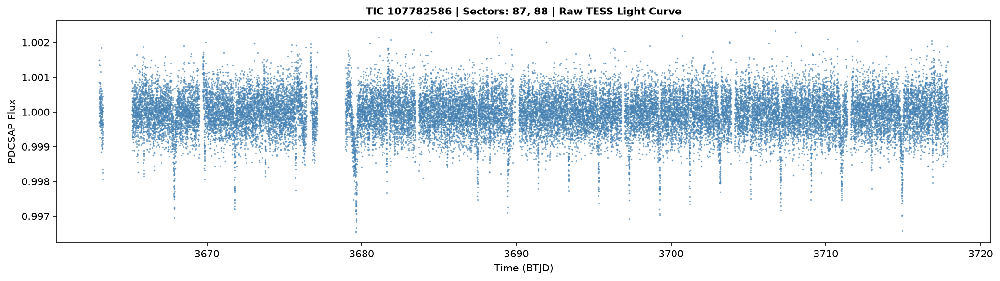
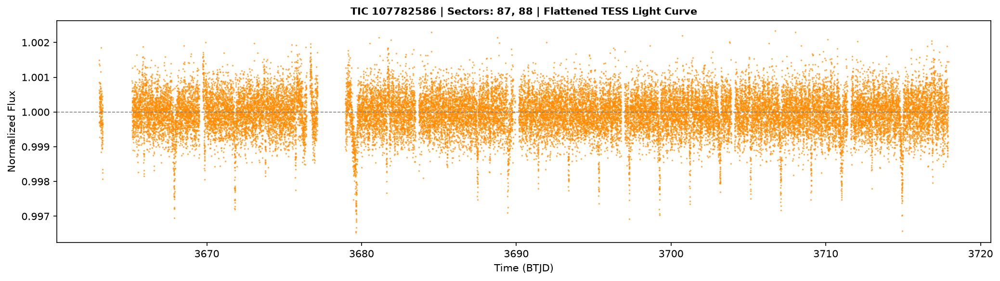
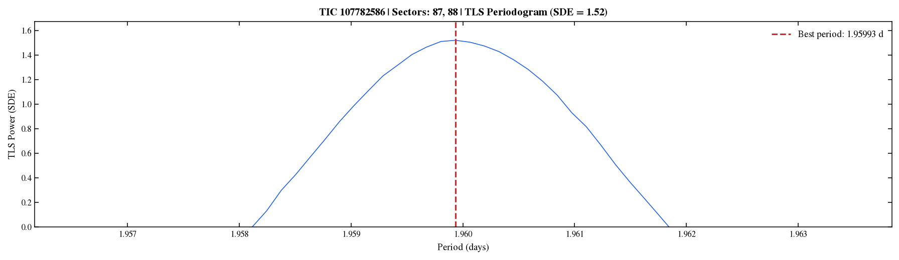
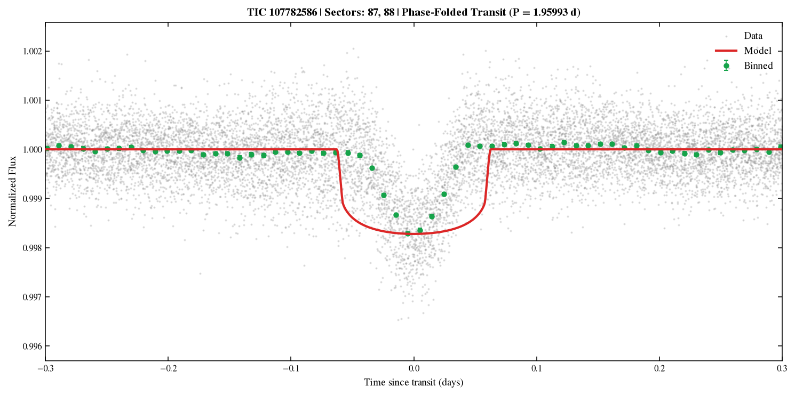
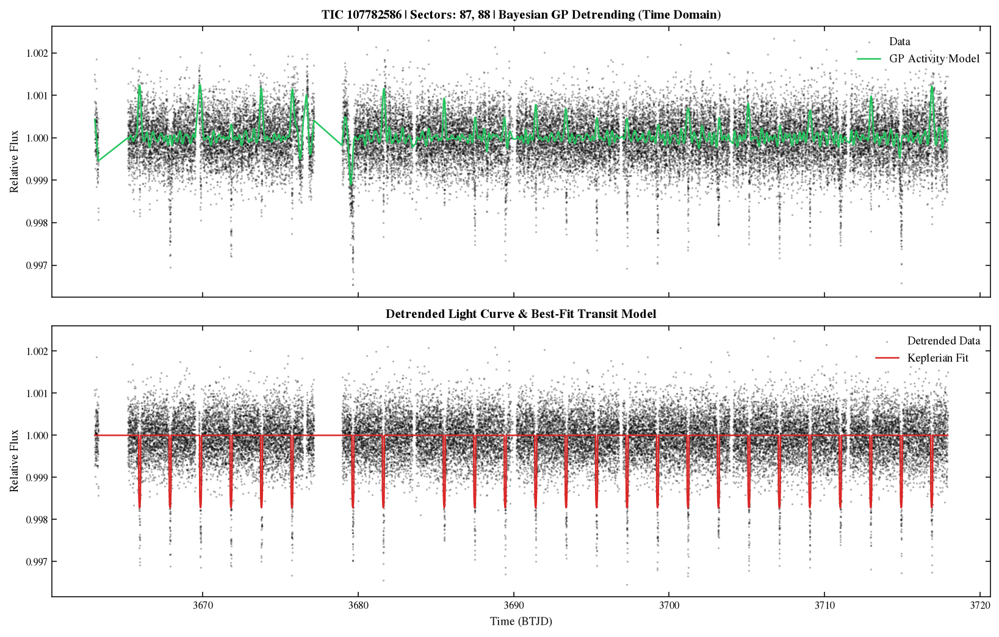
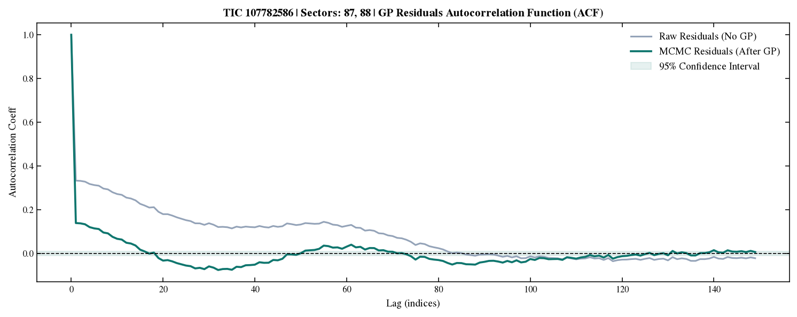
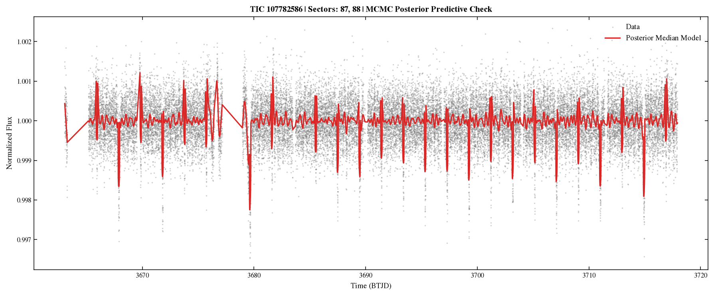
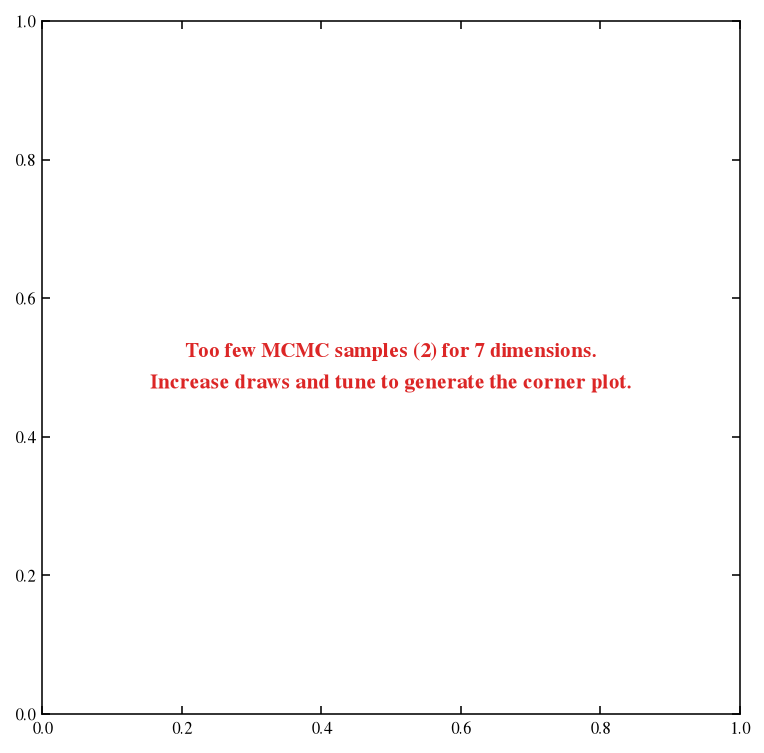
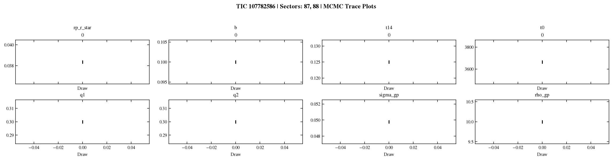

TIC Target
107782586
Sectors Used
87, 88
Primary Period
1.95993 d
Effective Temp
15388.8 K
Stellar Radius
7.11 R⊂
Planet 1 Parameters
Planet 1 Detection Probability
100.0%
Confirmed
Period (P)
1.959934 ± 0.000000 d
Derived (MCMC)
Transit Epoch (t₀)
3663.9747 ± 0.0000 BTJD
Derived (MCMC)
Radius Ratio (Rₚ/Rₛ)
0.03836 ± 0.00000
Derived (MCMC)
Planet Radius (Rₚ)
29.94 ± 1.17 R⊕
Derived (MCMC)
Transit Duration (T₁₄)
3.000 ± 0.000 hr
Derived (MCMC)
Impact Parameter (b)
0.100 ± 0.000
Derived (MCMC)
Semi-major Axis (a)
0.1727 ± 0.0068 AU
Derived (MCMC)
Equilibrium Temp (Teq)
4768 ± 148 K
Derived (MCMC)
Stellar Parameters
Stellar Radius (Rₛ)
7.11 R⊂
Derived (Teff scaling)
Stellar Mass (Mₛ)
5.29 M⊂
Torres et al. 2010
Effective Temp (Teff)
15388.8 K
Gaia DR3
Surface Gravity (log g)
3.93
Gaia DR3
Metallicity ([Fe/H])
0.64
Gaia DR3
Stellar Density (ρₛ)
0.021 g/cm³
Derived
MCMC Fit Diagnostics
R-hat Convergence
N/A
Derived (MCMC)
Min Effective Sample Size
N/A
Derived (MCMC)
Divergent Transitions
2
Derived (MCMC)
TLS SDE / SNR
1.52 / 81.22
Derived (TLS)

Raw TESS SAP/PDCSAP Light Curve before flat-fielding and outlier rejection.

Flattened Light Curve: detrended using a spline or high-pass filter, ready for transit search.

TLS / BLS Periodogram: power vs trial period (days). The peak indicates the best-fit orbital period. Subplots show subsequent searches if multi-planet mode is enabled.

Phase-Folded Light Curve: data folded at the detected period, showing the characteristic transit dip.

Bayesian Transit Fit: Full GP systematics + Keplerian transit model trend (top), phase-folded de-trended data fit (middle), and phase-folded model residuals (bottom) showing the excellent goodness-of-fit.

GP Autocorrelation Function (ACF) of Residuals: plots the autocorrelation of the residuals before GP detrending (light gray) and after GP detrending (green). This mathematically validates that the GP successfully removed red noise without affecting the transit profile.

Stacked Individual Transits: overlays individual transit events vertically. This visually confirms that the transit is consistently present in every orbit and is not caused by a single spurious artifact or flare.

Posterior Predictive Check: draws from the MCMC posterior overlaid on the transit data.

MCMC Phase-Folded Light Curve: data folded at the MCMC period. GP model has been subtracted.

Corner Plot showing covariance and 1D/2D posterior probability distributions for the key transit parameters, with parameter guide definitions.

MCMC Trace Plots: Parameter values over chain steps to verify proper mixing, convergence, and parameter stationarity.
{
"target": {
"tic_id": 107782586,
"name": "TIC 107782586",
"ra": 111.667845,
"dec": -24.462111
},
"period": {
"value": 1.9599339299955996,
"source": "archive"
},
"detection": {
"period": 1.9599339299955996,
"epoch": 3663.974665966659,
"duration_hr": 1.3444340769012297,
"depth": 0.001471112796080809,
"method": "tls",
"sde": 1.51949977804393,
"snr": 81.2180579379644,
"fap": 0.0,
"confidence": "Confirmed",
"existence_probability_search": 1.0,
"tls_periods": [
1.9561691830865766,
1.9562988413614628,
1.9564285110952346,
1.9565581922891582,
1.9566878849445002,
1.9568175890625248,
1.9569473046445014,
1.9570770316916948,
1.9572067702053724,
1.9573365201868014,
1.9574662816372475,
1.957596054557978,
1.9577258389502628,
1.957855634815367,
1.9579854421545597,
1.9581152609691084,
1.9582450912602811,
1.9583749330293458,
1.9585047862775704,
1.9586346510062254,
1.9587645272165786,
1.9588944149098984,
1.9590243140874548,
1.9591542247505165,
1.959284146900352,
1.9594140805382327,
1.9595440256654277,
1.9596739822832074,
1.9598039503928413,
1.9599339299955996,
1.9600639210927528,
1.9601939236855708,
1.9603239377753265,
1.9604539633632898,
1.9605840004507313,
1.9607140490389228,
1.9608441091291355,
1.9609741807226402,
1.961104263820711,
1.961234358424618,
1.9613644645356343,
1.9614945821550316,
1.9616247112840828,
1.9617548519240589,
1.9618850040762355,
1.9620151677418838,
1.962145342922278,
1.9622755296186905,
1.962405727832395,
1.9625359375646652,
1.962666158816774,
1.9627963915899973,
1.9629266358856083,
1.9630568917048816,
1.9631871590490917,
1.9633174379195126,
1.9634477283174188,
1.9635780302440873,
1.9637083437007914,
1.963838668688808
],
"tls_power": [
-1.316956363569305,
-1.2565511086167458,
-1.184863606908022,
-1.1151998687930345,
-1.0366245941032173,
-0.951592980362874,
-0.8743981782162564,
-0.7860487097676127,
-0.6954388871432527,
-0.6054559744210053,
-0.520260928835691,
-0.4344578162000034,
-0.3303478980222548,
-0.2245148918609117,
-0.11677317765656574,
0.00013295951419222874,
0.13220024635743396,
0.2978736214032384,
0.42717387027228204,
0.5698206107591381,
0.7106911555184576,
0.85594223535035,
0.9866771287223671,
1.1092260784213337,
1.2290344902838755,
1.3154427552596357,
1.4031205566988447,
1.4637009640430032,
1.5096986456047616,
1.51949977804393,
1.5036430162937409,
1.4724369064285274,
1.4270095790677852,
1.3607359835470287,
1.2823491439945578,
1.185904244270317,
1.072651509817363,
0.9300936108025738,
0.8159015788667071,
0.6665209196460298,
0.5087038029026025,
0.3654183036231357,
0.23109213202627107,
0.09479351237075416,
-0.04286604699774659,
-0.18118980618844477,
-0.3038119807319662,
-0.43769390573739547,
-0.5564086872441493,
-0.690800124707612,
-0.8015362189212812,
-0.9275698191588474,
-1.0374362554415948,
-1.145402872707552,
-1.2527121371471093,
-1.3508696902742188,
-1.441375346911798,
-1.533830303550771,
-1.6090307830060027,
-1.6854703767070347
],
"note": "refined archive period",
"existence_probability_bayesian": 1.0,
"bayesian_confidence": "Confirmed"
},
"stellar": {
"r_star": 7.108110229456483,
"r_star_err": 2.132433068836945,
"m_star": 5.2896503191578335,
"m_star_err": null,
"teff": 15388.751953125,
"teff_err": 233.888671875,
"logg": 3.926500082015991,
"logg_err": 0.18139994144439697,
"feh": 0.6370000243186951,
"feh_err": 0.15239998698234558,
"lum": null,
"lum_err": null,
"parallax": 1.7853954659481484,
"parallax_err": 0.11098917573690414,
"age": null,
"age_err": null,
"method": "gaia_only",
"r_star_unit": "R_sun",
"m_star_unit": "M_sun",
"rho_star_unit": "g/cm^3",
"rho_star": 0.020765114461101467,
"rho_star_err": null,
"reference": "Main-sequence Teff scaling+Gaia DR3",
"teff_source": "Gaia",
"teff_ref": "Gaia DR3",
"teff_unit": "K",
"logg_source": "Gaia",
"logg_ref": "Gaia DR3",
"logg_unit": "dex",
"parallax_source": "Gaia",
"parallax_ref": "Gaia DR3",
"parallax_unit": "mas",
"feh_source": "Gaia",
"feh_ref": "Gaia DR3",
"feh_unit": "dex",
"r_star_source": "Derived (Teff scaling)",
"r_star_ref": "Main-sequence Teff scaling",
"m_star_source": "Torres et al. 2010",
"m_star_ref": "Torres et al. (2010)"
},
"planet": {
"rp_r_star": 0.03835508826845285,
"rp_r_star_err": 0.0,
"rp_r_star_16": 0.03835508826845285,
"rp_r_star_84": 0.03835508826845285,
"b": 0.10000000000000002,
"b_err": 0.0,
"b_16": 0.10000000000000002,
"b_84": 0.10000000000000002,
"period": 1.9599339299955996,
"period_err": 0.0,
"period_16": 1.9599339299955996,
"period_84": 1.9599339299955996,
"t0": 3663.974665966659,
"t0_err": 0.0,
"t0_16": 3663.974665966659,
"t0_84": 3663.974665966659,
"rho_star": 0.6893110221411914,
"rho_star_err": 0.0,
"rho_star_16": 0.6893110221411914,
"rho_star_84": 0.6893110221411914,
"a_r_star": 5.193908149349648,
"a_r_star_err": 0.0,
"a_r_star_16": 5.193908149349648,
"a_r_star_84": 5.193908149349648,
"t14_hr": 3.0000000000000013,
"t14_hr_err": 0.0,
"t14_hr_16": 3.0000000000000013,
"t14_hr_84": 3.0000000000000013,
"rp_earth": 29.94455203351654,
"rp_earth_err": 1.1713844170860952,
"rp_earth_16": 29.148010629897996,
"rp_earth_84": 30.741093437135085,
"a_au": 0.17268373577302715,
"a_au_err": 0.006755119827550879,
"a_au_16": 0.16809025429029253,
"a_au_84": 0.17727721725576173,
"t_eq": 4768.062512692413,
"t_eq_err": 147.63317745921586,
"t_eq_16": 4667.671952020147,
"t_eq_84": 4868.453073364681
},
"planets": [
{
"rp_r_star": 0.03835508826845285,
"rp_r_star_err": 0.0,
"rp_r_star_16": 0.03835508826845285,
"rp_r_star_84": 0.03835508826845285,
"b": 0.10000000000000002,
"b_err": 0.0,
"b_16": 0.10000000000000002,
"b_84": 0.10000000000000002,
"period": 1.9599339299955996,
"period_err": 0.0,
"period_16": 1.9599339299955996,
"period_84": 1.9599339299955996,
"t0": 3663.974665966659,
"t0_err": 0.0,
"t0_16": 3663.974665966659,
"t0_84": 3663.974665966659,
"rho_star": 0.6893110221411914,
"rho_star_err": 0.0,
"rho_star_16": 0.6893110221411914,
"rho_star_84": 0.6893110221411914,
"a_r_star": 5.193908149349648,
"a_r_star_err": 0.0,
"a_r_star_16": 5.193908149349648,
"a_r_star_84": 5.193908149349648,
"t14_hr": 3.0000000000000013,
"t14_hr_err": 0.0,
"t14_hr_16": 3.0000000000000013,
"t14_hr_84": 3.0000000000000013,
"rp_earth": 29.94455203351654,
"rp_earth_err": 1.1713844170860952,
"rp_earth_16": 29.148010629897996,
"rp_earth_84": 30.741093437135085,
"a_au": 0.17268373577302715,
"a_au_err": 0.006755119827550879,
"a_au_16": 0.16809025429029253,
"a_au_84": 0.17727721725576173,
"t_eq": 4768.062512692413,
"t_eq_err": 147.63317745921586,
"t_eq_16": 4667.671952020147,
"t_eq_84": 4868.453073364681
}
],
"diagnostics": {
"rhat_max": NaN,
"rhat_dict": {
"period[0]": NaN,
"t0[0]": NaN,
"mean_flux[0]": NaN,
"log_jitter": NaN,
"log_sigma_gp": NaN,
"log_rho_gp": NaN,
"log_rp[0]": NaN,
"b[0]": NaN,
"log_t14[0]": NaN,
"q1": NaN,
"q2": NaN,
"rp_r_star[0]": NaN,
"t14[0]": NaN,
"u1": NaN,
"u2": NaN,
"jitter": NaN,
"rho_star": NaN,
"sigma_gp": NaN,
"rho_gp": NaN,
"lc_pred_p0[0]": NaN,
"lc_pred_p0[1]": NaN,
"lc_pred_p0[2]": NaN,
"lc_pred_p0[3]": NaN,
"lc_pred_p0[4]": NaN,
"lc_pred_p0[5]": NaN,
"lc_pred_p0[6]": NaN,
"lc_pred_p0[7]": NaN,
"lc_pred_p0[8]": NaN,
"lc_pred_p0[9]": NaN,
"lc_pred_p0[10]": NaN,
"lc_pred_p0[11]": NaN,
"lc_pred_p0[12]": NaN,
"lc_pred_p0[13]": NaN,
"lc_pred_p0[14]": NaN,
"lc_pred_p0[15]": NaN,
"lc_pred_p0[16]": NaN,
"lc_pred_p0[17]": NaN,
"lc_pred_p0[18]": NaN,
"lc_pred_p0[19]": NaN,
"lc_pred_p0[20]": NaN,
"lc_pred_p0[21]": NaN,
"lc_pred_p0[22]": NaN,
"lc_pred_p0[23]": NaN,
"lc_pred_p0[24]": NaN,
"lc_pred_p0[25]": NaN,
"lc_pred_p0[26]": NaN,
"lc_pred_p0[27]": NaN,
"lc_pred_p0[28]": NaN,
"lc_pred_p0[29]": NaN,
"lc_pred_p0[30]": NaN,
"lc_pred_p0[31]": NaN,
"lc_pred_p0[32]": NaN,
"lc_pred_p0[33]": NaN,
"lc_pred_p0[34]": NaN,
"lc_pred_p0[35]": NaN,
"lc_pred_p0[36]": NaN,
"lc_pred_p0[37]": NaN,
"lc_pred_p0[38]": NaN,
"lc_pred_p0[39]": NaN,
"lc_pred_p0[40]": NaN,
"lc_pred_p0[41]": NaN,
"lc_pred_p0[42]": NaN,
"lc_pred_p0[43]": NaN,
"lc_pred_p0[44]": NaN,
"lc_pred_p0[45]": NaN,
"lc_pred_p0[46]": NaN,
"lc_pred_p0[47]": NaN,
"lc_pred_p0[48]": NaN,
"lc_pred_p0[49]": NaN,
"lc_pred_p0[50]": NaN,
"lc_pred_p0[51]": NaN,
"lc_pred_p0[52]": NaN,
"lc_pred_p0[53]": NaN,
"lc_pred_p0[54]": NaN,
"lc_pred_p0[55]": NaN,
"lc_pred_p0[56]": NaN,
"lc_pred_p0[57]": NaN,
"lc_pred_p0[58]": NaN,
"lc_pred_p0[59]": NaN,
"lc_pred_p0[60]": NaN,
"lc_pred_p0[61]": NaN,
"lc_pred_p0[62]": NaN,
"lc_pred_p0[63]": NaN,
"lc_pred_p0[64]": NaN,
"lc_pred_p0[65]": NaN,
"lc_pred_p0[66]": NaN,
"lc_pred_p0[67]": NaN,
"lc_pred_p0[68]": NaN,
"lc_pred_p0[69]": NaN,
"lc_pred_p0[70]": NaN,
"lc_pred_p0[71]": NaN,
"lc_pred_p0[72]": NaN,
"lc_pred_p0[73]": NaN,
"lc_pred_p0[74]": NaN,
"lc_pred_p0[75]": NaN,
"lc_pred_p0[76]": NaN,
"lc_pred_p0[77]": NaN,
"lc_pred_p0[78]": NaN,
"lc_pred_p0[79]": NaN,
"lc_pred_p0[80]": NaN,
"lc_pred_p0[81]": NaN,
"lc_pred_p0[82]": NaN,
"lc_pred_p0[83]": NaN,
"lc_pred_p0[84]": NaN,
"lc_pred_p0[85]": NaN,
"lc_pred_p0[86]": NaN,
"lc_pred_p0[87]": NaN,
"lc_pred_p0[88]": NaN,
"lc_pred_p0[89]": NaN,
"lc_pred_p0[90]": NaN,
"lc_pred_p0[91]": NaN,
"lc_pred_p0[92]": NaN,
"lc_pred_p0[93]": NaN,
"lc_pred_p0[94]": NaN,
"lc_pred_p0[95]": NaN,
"lc_pred_p0[96]": NaN,
"lc_pred_p0[97]": NaN,
"lc_pred_p0[98]": NaN,
"lc_pred_p0[99]": NaN,
"lc_pred_p0[100]": NaN,
"lc_pred_p0[101]": NaN,
"lc_pred_p0[102]": NaN,
"lc_pred_p0[103]": NaN,
"lc_pred_p0[104]": NaN,
"lc_pred_p0[105]": NaN,
"lc_pred_p0[106]": NaN,
"lc_pred_p0[107]": NaN,
"lc_pred_p0[108]": NaN,
"lc_pred_p0[109]": NaN,
"lc_pred_p0[110]": NaN,
"lc_pred_p0[111]": NaN,
"lc_pred_p0[112]": NaN,
"lc_pred_p0[113]": NaN,
"lc_pred_p0[114]": NaN,
"lc_pred_p0[115]": NaN,
"lc_pred_p0[116]": NaN,
"lc_pred_p0[117]": NaN,
"lc_pred_p0[118]": NaN,
"lc_pred_p0[119]": NaN,
"lc_pred_p0[120]": NaN,
"lc_pred_p0[121]": NaN,
"lc_pred_p0[122]": NaN,
"lc_pred_p0[123]": NaN,
"lc_pred_p0[124]": NaN,
"lc_pred_p0[125]": NaN,
"lc_pred_p0[126]": NaN,
"lc_pred_p0[127]": NaN,
"lc_pred_p0[128]": NaN,
"lc_pred_p0[129]": NaN,
"lc_pred_p0[130]": NaN,
"lc_pred_p0[131]": NaN,
"lc_pred_p0[132]": NaN,
"lc_pred_p0[133]": NaN,
"lc_pred_p0[134]": NaN,
"lc_pred_p0[135]": NaN,
"lc_pred_p0[136]": NaN,
"lc_pred_p0[137]": NaN,
"lc_pred_p0[138]": NaN,
"lc_pred_p0[139]": NaN,
"lc_pred_p0[140]": NaN,
"lc_pred_p0[141]": NaN,
"lc_pred_p0[142]": NaN,
"lc_pred_p0[143]": NaN,
"lc_pred_p0[144]": NaN,
"lc_pred_p0[145]": NaN,
"lc_pred_p0[146]": NaN,
"lc_pred_p0[147]": NaN,
"lc_pred_p0[148]": NaN,
"lc_pred_p0[149]": NaN,
"lc_pred_p0[150]": NaN,
"lc_pred_p0[151]": NaN,
"lc_pred_p0[152]": NaN,
"lc_pred_p0[153]": NaN,
"lc_pred_p0[154]": NaN,
"lc_pred_p0[155]": NaN,
"lc_pred_p0[156]": NaN,
"lc_pred_p0[157]": NaN,
"lc_pred_p0[158]": NaN,
"lc_pred_p0[159]": NaN,
"lc_pred_p0[160]": NaN,
"lc_pred_p0[161]": NaN,
"lc_pred_p0[162]": NaN,
"lc_pred_p0[163]": NaN,
"lc_pred_p0[164]": NaN,
"lc_pred_p0[165]": NaN,
"lc_pred_p0[166]": NaN,
"lc_pred_p0[167]": NaN,
"lc_pred_p0[168]": NaN,
"lc_pred_p0[169]": NaN,
"lc_pred_p0[170]": NaN,
"lc_pred_p0[171]": NaN,
"lc_pred_p0[172]": NaN,
"lc_pred_p0[173]": NaN,
"lc_pred_p0[174]": NaN,
"lc_pred_p0[175]": NaN,
"lc_pred_p0[176]": NaN,
"lc_pred_p0[177]": NaN,
"lc_pred_p0[178]": NaN,
"lc_pred_p0[179]": NaN,
"lc_pred_p0[180]": NaN,
"lc_pred_p0[181]": NaN,
"lc_pred_p0[182]": NaN,
"lc_pred_p0[183]": NaN,
"lc_pred_p0[184]": NaN,
"lc_pred_p0[185]": NaN,
"lc_pred_p0[186]": NaN,
"lc_pred_p0[187]": NaN,
"lc_pred_p0[188]": NaN,
"lc_pred_p0[189]": NaN,
"lc_pred_p0[190]": NaN,
"lc_pred_p0[191]": NaN,
"lc_pred_p0[192]": NaN,
"lc_pred_p0[193]": NaN,
"lc_pred_p0[194]": NaN,
"lc_pred_p0[195]": NaN,
"lc_pred_p0[196]": NaN,
"lc_pred_p0[197]": NaN,
"lc_pred_p0[198]": NaN,
"lc_pred_p0[199]": NaN
},
"ess_min": NaN,
"ess_dict": {
"period[0]": NaN,
"t0[0]": NaN,
"mean_flux[0]": NaN,
"log_jitter": NaN,
"log_sigma_gp": NaN,
"log_rho_gp": NaN,
"log_rp[0]": NaN,
"b[0]": NaN,
"log_t14[0]": NaN,
"q1": NaN,
"q2": NaN,
"rp_r_star[0]": NaN,
"t14[0]": NaN,
"u1": NaN,
"u2": NaN,
"jitter": NaN,
"rho_star": NaN,
"sigma_gp": NaN,
"rho_gp": NaN,
"lc_pred_p0[0]": NaN,
"lc_pred_p0[1]": NaN,
"lc_pred_p0[2]": NaN,
"lc_pred_p0[3]": NaN,
"lc_pred_p0[4]": NaN,
"lc_pred_p0[5]": NaN,
"lc_pred_p0[6]": NaN,
"lc_pred_p0[7]": NaN,
"lc_pred_p0[8]": NaN,
"lc_pred_p0[9]": NaN,
"lc_pred_p0[10]": NaN,
"lc_pred_p0[11]": NaN,
"lc_pred_p0[12]": NaN,
"lc_pred_p0[13]": NaN,
"lc_pred_p0[14]": NaN,
"lc_pred_p0[15]": NaN,
"lc_pred_p0[16]": NaN,
"lc_pred_p0[17]": NaN,
"lc_pred_p0[18]": NaN,
"lc_pred_p0[19]": NaN,
"lc_pred_p0[20]": NaN,
"lc_pred_p0[21]": NaN,
"lc_pred_p0[22]": NaN,
"lc_pred_p0[23]": NaN,
"lc_pred_p0[24]": NaN,
"lc_pred_p0[25]": NaN,
"lc_pred_p0[26]": NaN,
"lc_pred_p0[27]": NaN,
"lc_pred_p0[28]": NaN,
"lc_pred_p0[29]": NaN,
"lc_pred_p0[30]": NaN,
"lc_pred_p0[31]": NaN,
"lc_pred_p0[32]": NaN,
"lc_pred_p0[33]": NaN,
"lc_pred_p0[34]": NaN,
"lc_pred_p0[35]": NaN,
"lc_pred_p0[36]": NaN,
"lc_pred_p0[37]": NaN,
"lc_pred_p0[38]": NaN,
"lc_pred_p0[39]": NaN,
"lc_pred_p0[40]": NaN,
"lc_pred_p0[41]": NaN,
"lc_pred_p0[42]": NaN,
"lc_pred_p0[43]": NaN,
"lc_pred_p0[44]": NaN,
"lc_pred_p0[45]": NaN,
"lc_pred_p0[46]": NaN,
"lc_pred_p0[47]": NaN,
"lc_pred_p0[48]": NaN,
"lc_pred_p0[49]": NaN,
"lc_pred_p0[50]": NaN,
"lc_pred_p0[51]": NaN,
"lc_pred_p0[52]": NaN,
"lc_pred_p0[53]": NaN,
"lc_pred_p0[54]": NaN,
"lc_pred_p0[55]": NaN,
"lc_pred_p0[56]": NaN,
"lc_pred_p0[57]": NaN,
"lc_pred_p0[58]": NaN,
"lc_pred_p0[59]": NaN,
"lc_pred_p0[60]": NaN,
"lc_pred_p0[61]": NaN,
"lc_pred_p0[62]": NaN,
"lc_pred_p0[63]": NaN,
"lc_pred_p0[64]": NaN,
"lc_pred_p0[65]": NaN,
"lc_pred_p0[66]": NaN,
"lc_pred_p0[67]": NaN,
"lc_pred_p0[68]": NaN,
"lc_pred_p0[69]": NaN,
"lc_pred_p0[70]": NaN,
"lc_pred_p0[71]": NaN,
"lc_pred_p0[72]": NaN,
"lc_pred_p0[73]": NaN,
"lc_pred_p0[74]": NaN,
"lc_pred_p0[75]": NaN,
"lc_pred_p0[76]": NaN,
"lc_pred_p0[77]": NaN,
"lc_pred_p0[78]": NaN,
"lc_pred_p0[79]": NaN,
"lc_pred_p0[80]": NaN,
"lc_pred_p0[81]": NaN,
"lc_pred_p0[82]": NaN,
"lc_pred_p0[83]": NaN,
"lc_pred_p0[84]": NaN,
"lc_pred_p0[85]": NaN,
"lc_pred_p0[86]": NaN,
"lc_pred_p0[87]": NaN,
"lc_pred_p0[88]": NaN,
"lc_pred_p0[89]": NaN,
"lc_pred_p0[90]": NaN,
"lc_pred_p0[91]": NaN,
"lc_pred_p0[92]": NaN,
"lc_pred_p0[93]": NaN,
"lc_pred_p0[94]": NaN,
"lc_pred_p0[95]": NaN,
"lc_pred_p0[96]": NaN,
"lc_pred_p0[97]": NaN,
"lc_pred_p0[98]": NaN,
"lc_pred_p0[99]": NaN,
"lc_pred_p0[100]": NaN,
"lc_pred_p0[101]": NaN,
"lc_pred_p0[102]": NaN,
"lc_pred_p0[103]": NaN,
"lc_pred_p0[104]": NaN,
"lc_pred_p0[105]": NaN,
"lc_pred_p0[106]": NaN,
"lc_pred_p0[107]": NaN,
"lc_pred_p0[108]": NaN,
"lc_pred_p0[109]": NaN,
"lc_pred_p0[110]": NaN,
"lc_pred_p0[111]": NaN,
"lc_pred_p0[112]": NaN,
"lc_pred_p0[113]": NaN,
"lc_pred_p0[114]": NaN,
"lc_pred_p0[115]": NaN,
"lc_pred_p0[116]": NaN,
"lc_pred_p0[117]": NaN,
"lc_pred_p0[118]": NaN,
"lc_pred_p0[119]": NaN,
"lc_pred_p0[120]": NaN,
"lc_pred_p0[121]": NaN,
"lc_pred_p0[122]": NaN,
"lc_pred_p0[123]": NaN,
"lc_pred_p0[124]": NaN,
"lc_pred_p0[125]": NaN,
"lc_pred_p0[126]": NaN,
"lc_pred_p0[127]": NaN,
"lc_pred_p0[128]": NaN,
"lc_pred_p0[129]": NaN,
"lc_pred_p0[130]": NaN,
"lc_pred_p0[131]": NaN,
"lc_pred_p0[132]": NaN,
"lc_pred_p0[133]": NaN,
"lc_pred_p0[134]": NaN,
"lc_pred_p0[135]": NaN,
"lc_pred_p0[136]": NaN,
"lc_pred_p0[137]": NaN,
"lc_pred_p0[138]": NaN,
"lc_pred_p0[139]": NaN,
"lc_pred_p0[140]": NaN,
"lc_pred_p0[141]": NaN,
"lc_pred_p0[142]": NaN,
"lc_pred_p0[143]": NaN,
"lc_pred_p0[144]": NaN,
"lc_pred_p0[145]": NaN,
"lc_pred_p0[146]": NaN,
"lc_pred_p0[147]": NaN,
"lc_pred_p0[148]": NaN,
"lc_pred_p0[149]": NaN,
"lc_pred_p0[150]": NaN,
"lc_pred_p0[151]": NaN,
"lc_pred_p0[152]": NaN,
"lc_pred_p0[153]": NaN,
"lc_pred_p0[154]": NaN,
"lc_pred_p0[155]": NaN,
"lc_pred_p0[156]": NaN,
"lc_pred_p0[157]": NaN,
"lc_pred_p0[158]": NaN,
"lc_pred_p0[159]": NaN,
"lc_pred_p0[160]": NaN,
"lc_pred_p0[161]": NaN,
"lc_pred_p0[162]": NaN,
"lc_pred_p0[163]": NaN,
"lc_pred_p0[164]": NaN,
"lc_pred_p0[165]": NaN,
"lc_pred_p0[166]": NaN,
"lc_pred_p0[167]": NaN,
"lc_pred_p0[168]": NaN,
"lc_pred_p0[169]": NaN,
"lc_pred_p0[170]": NaN,
"lc_pred_p0[171]": NaN,
"lc_pred_p0[172]": NaN,
"lc_pred_p0[173]": NaN,
"lc_pred_p0[174]": NaN,
"lc_pred_p0[175]": NaN,
"lc_pred_p0[176]": NaN,
"lc_pred_p0[177]": NaN,
"lc_pred_p0[178]": NaN,
"lc_pred_p0[179]": NaN,
"lc_pred_p0[180]": NaN,
"lc_pred_p0[181]": NaN,
"lc_pred_p0[182]": NaN,
"lc_pred_p0[183]": NaN,
"lc_pred_p0[184]": NaN,
"lc_pred_p0[185]": NaN,
"lc_pred_p0[186]": NaN,
"lc_pred_p0[187]": NaN,
"lc_pred_p0[188]": NaN,
"lc_pred_p0[189]": NaN,
"lc_pred_p0[190]": NaN,
"lc_pred_p0[191]": NaN,
"lc_pred_p0[192]": NaN,
"lc_pred_p0[193]": NaN,
"lc_pred_p0[194]": NaN,
"lc_pred_p0[195]": NaN,
"lc_pred_p0[196]": NaN,
"lc_pred_p0[197]": NaN,
"lc_pred_p0[198]": NaN,
"lc_pred_p0[199]": NaN
},
"divergences": 2,
"converged": false
},
"metadata": {
"tess_pipeline_version": "0.1.0",
"run_start": "2026-07-07T11:23:07.167897",
"sectors_used": [
87,
88
],
"config": {
"target": "TIC 107782586",
"author": "SPOC",
"cadence": 120,
"sectors": "longest",
"lightcurve_source": "download",
"lightcurve_fits": [],
"search_method": "tls",
"inference": true,
"inference_backend": "exoplanet",
"chains": 2,
"draws": 1,
"gp_kernel": "SHO",
"verbose": true
},
"detections": [
{
"period": 1.9599339299955996,
"epoch": 3663.974665966659,
"duration_hr": 1.3444340769012297,
"depth": 0.001471112796080809,
"method": "tls",
"sde": 1.51949977804393,
"snr": 81.2180579379644,
"fap": 0.0,
"confidence": "Confirmed",
"existence_probability_search": 1.0,
"tls_periods": [
1.9561691830865766,
1.9562988413614628,
1.9564285110952346,
1.9565581922891582,
1.9566878849445002,
1.9568175890625248,
1.9569473046445014,
1.9570770316916948,
1.9572067702053724,
1.9573365201868014,
1.9574662816372475,
1.957596054557978,
1.9577258389502628,
1.957855634815367,
1.9579854421545597,
1.9581152609691084,
1.9582450912602811,
1.9583749330293458,
1.9585047862775704,
1.9586346510062254,
1.9587645272165786,
1.9588944149098984,
1.9590243140874548,
1.9591542247505165,
1.959284146900352,
1.9594140805382327,
1.9595440256654277,
1.9596739822832074,
1.9598039503928413,
1.9599339299955996,
1.9600639210927528,
1.9601939236855708,
1.9603239377753265,
1.9604539633632898,
1.9605840004507313,
1.9607140490389228,
1.9608441091291355,
1.9609741807226402,
1.961104263820711,
1.961234358424618,
1.9613644645356343,
1.9614945821550316,
1.9616247112840828,
1.9617548519240589,
1.9618850040762355,
1.9620151677418838,
1.962145342922278,
1.9622755296186905,
1.962405727832395,
1.9625359375646652,
1.962666158816774,
1.9627963915899973,
1.9629266358856083,
1.9630568917048816,
1.9631871590490917,
1.9633174379195126,
1.9634477283174188,
1.9635780302440873,
1.9637083437007914,
1.963838668688808
],
"tls_power": [
-1.316956363569305,
-1.2565511086167458,
-1.184863606908022,
-1.1151998687930345,
-1.0366245941032173,
-0.951592980362874,
-0.8743981782162564,
-0.7860487097676127,
-0.6954388871432527,
-0.6054559744210053,
-0.520260928835691,
-0.4344578162000034,
-0.3303478980222548,
-0.2245148918609117,
-0.11677317765656574,
0.00013295951419222874,
0.13220024635743396,
0.2978736214032384,
0.42717387027228204,
0.5698206107591381,
0.7106911555184576,
0.85594223535035,
0.9866771287223671,
1.1092260784213337,
1.2290344902838755,
1.3154427552596357,
1.4031205566988447,
1.4637009640430032,
1.5096986456047616,
1.51949977804393,
1.5036430162937409,
1.4724369064285274,
1.4270095790677852,
1.3607359835470287,
1.2823491439945578,
1.185904244270317,
1.072651509817363,
0.9300936108025738,
0.8159015788667071,
0.6665209196460298,
0.5087038029026025,
0.3654183036231357,
0.23109213202627107,
0.09479351237075416,
-0.04286604699774659,
-0.18118980618844477,
-0.3038119807319662,
-0.43769390573739547,
-0.5564086872441493,
-0.690800124707612,
-0.8015362189212812,
-0.9275698191588474,
-1.0374362554415948,
-1.145402872707552,
-1.2527121371471093,
-1.3508696902742188,
-1.441375346911798,
-1.533830303550771,
-1.6090307830060027,
-1.6854703767070347
],
"note": "refined archive period",
"existence_probability_bayesian": 1.0,
"bayesian_confidence": "Confirmed"
}
]
}
}